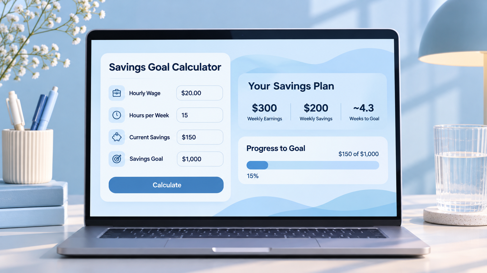

用真实问题开始
输入时薪、每周工时、现有存款和目标金额，计算达到目标还需多久。
把兼职时薪、每周工时和储蓄目标变成一个真正能计算的网页工具。你负责想清楚问题，AI 帮你把它做出来。
从一个想法出发，一步步做出属于你的版本。

这是一个基于用户输入的储蓄估算工具，可帮助比较不同计划；结果是简化估算，不代表实际税后收入。
输入有效数字后能计算预计周数；能提示无效输入，目标已达成时给出相应结果。
固定项目主题，创意和风格由你决定。课堂目标是可展示的初版。
动手做、不断试，让想法逐渐变成你能展示的东西。
输入时薪、每周工时、现有存款和目标金额，计算达到目标还需多久。
让输入、计算和结果展示真正工作，并处理空值和无效数字。
改变工作时数或储蓄目标，观察估算如何变化，再调整界面让它更易懂。
从提出问题到检验结果，每一步都由你来决定。
把生活中的问题转成输入、规则和可以检验的输出。
清楚描述功能，让 AI 协助编写、修改并运行页面。
手算对照结果，发现错误输入或计算中的问题。
0:00–1:00 构思与开始制作 / 1:00–1:10 休息 / 1:10–2:00 制作初版 / 2:00–2:20 休息 / 2:20–3:05 完善与测试 / 3:05–3:15 休息 / 3:15–4:00 展示与保存
把这次的思路带到你真正感兴趣的领域。